Découvrez AvineJS avec 3 plugins étonnamment flexibles et basés sur ce puissant framework.
En bonus, appréciez les possibilités du framework AvineJS avec Quest, un jeu basé uniquement sur la manipulation du DOM (sans balise canvas) écrit en HTML, CSS et... Javascript !
Maîtrisez les rouages de AvineJS grâce à sa documentation en ligne. Les fonctions principales sont expliquées en détail et accompagnées d'exemples de codes directement exécutés. Et pour aller encore plus loin, n'hésitez-pas à retrousser les manches et consultez le code source particulièrement clair. Pour comprendre la structure du framework, consultez l'introduction.
AvineJS est compatible avec les principaux navigateurs du marché (dont Internet Explorer à partir de la version 7) et distribué sous licence Open source. Alors téléchargez-le sans plus attendre pour le tester par vous-même...


Si comme je l'espère vous appréciez AvineJS, n'hésitez-pas à me contacter  pour me faire part de vos impressions, remarques et questions éventuelles.
pour me faire part de vos impressions, remarques et questions éventuelles.